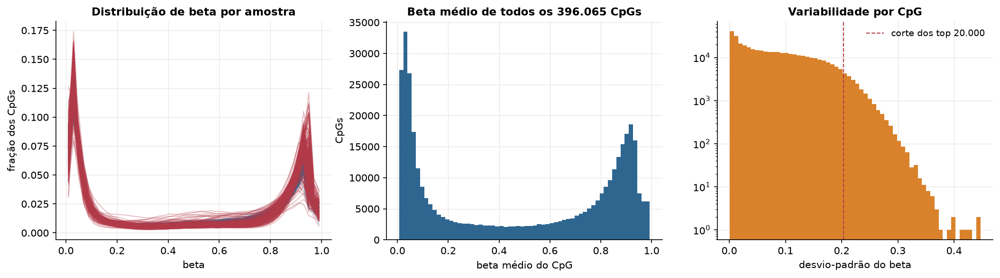
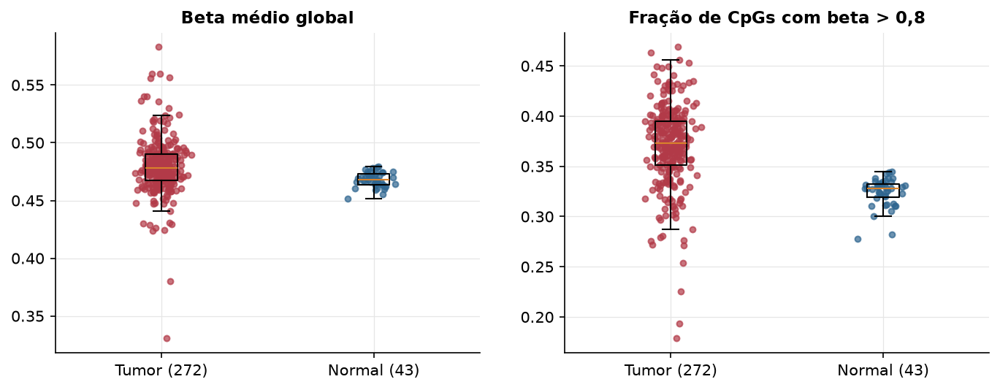
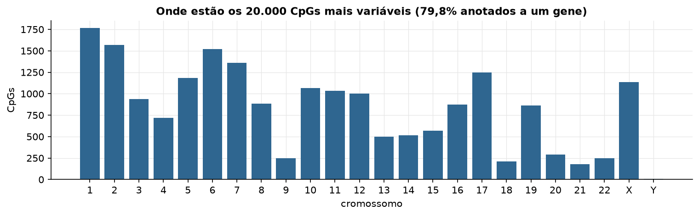
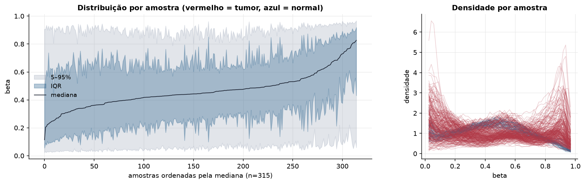
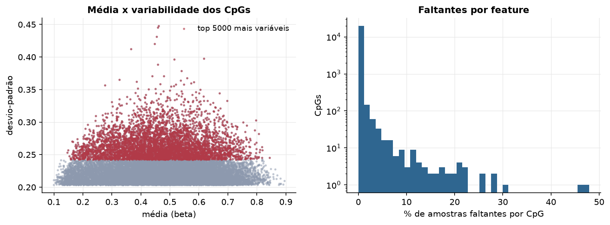
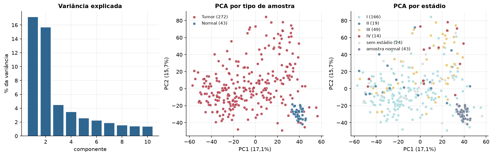
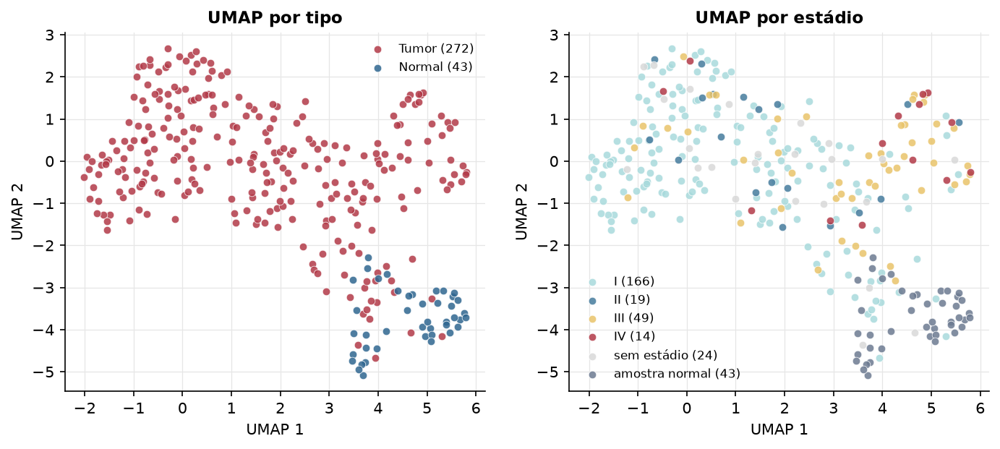
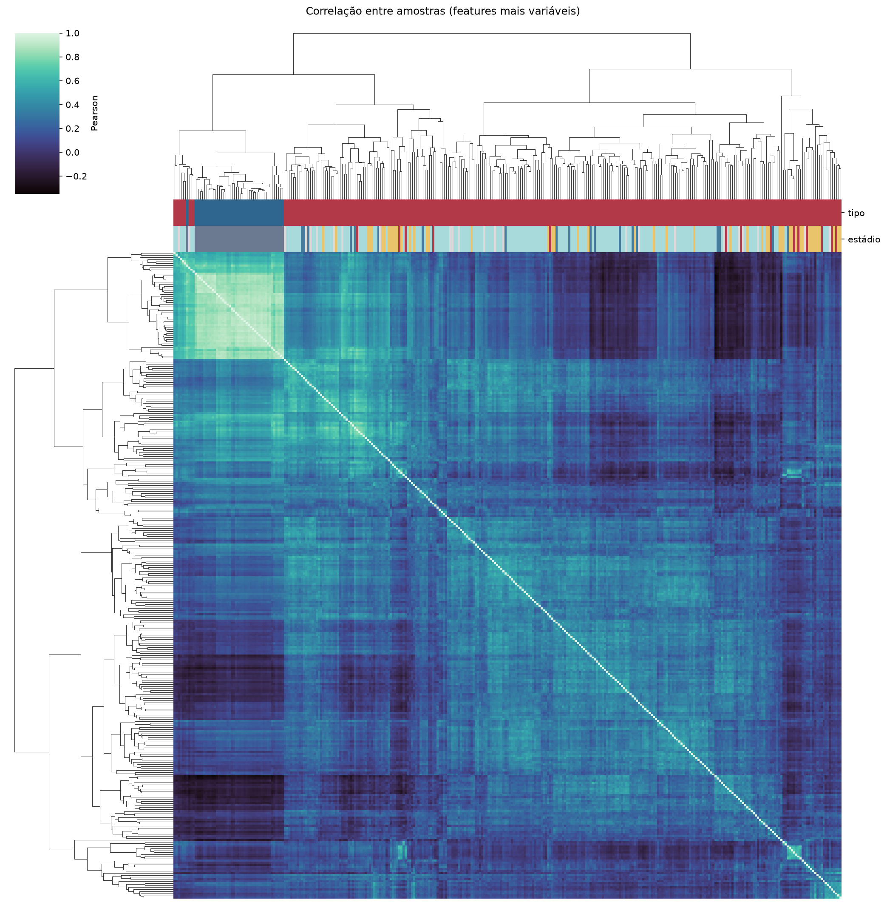
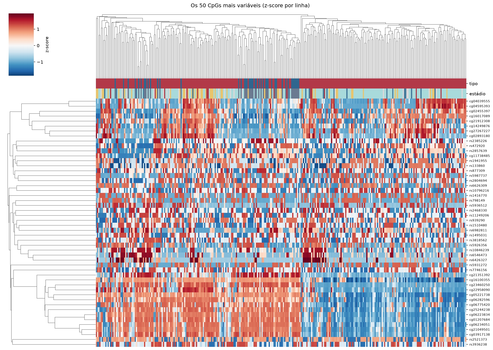
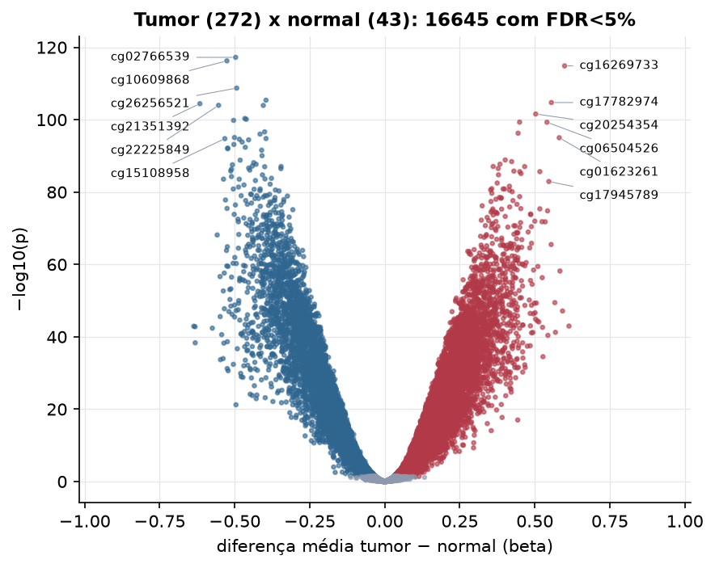

KIRP · Metilação do DNA (450k)
Illumina Infinium HumanMethylation450, valores beta (0 a 1) · gerado em 21/10/2026 23:16
396.065CpGs medidos
383.152CpGs sem faltante
20.000CpGs
272amostras tumorais
43amostras normais
0,1%valores faltantes
Fonte: PanCanAtlas HM450 via API do Xena
O array tem ~485 mil CpGs. Para não ocupar espaço, guardamos estatísticas de todos os CpGs e só os 20.000 mais variáveis para PCA, UMAP e heatmaps.
Principais resultados
- A distribuição de beta é bimodal: a maioria dos CpGs está quase toda desmetilada (perto de 0, típico de ilhas CpG em promotores) ou quase toda metilada (perto de 1, corpo gênico e regiões intergênicas). 27,3% dos CpGs têm beta médio intermediário (0,2 a 0,8).
- Beta médio global: 0,478 nos tumores e 0,468 nos normais (sem hipometilação global no tumor).
- 20.000 CpGs medidos em 315 amostras (272 tumorais e 43 normais); 0,1% dos valores estão faltando.
- Os dois primeiros componentes principais explicam 17,1% e 15,7% da variância das features mais variáveis.
- Correlação mediana entre amostras: 0,23.
- Tumor x normal: 16645 CpGs diferentes com FDR < 5% (10255 maiores no tumor, 6390 maiores no normal; 43 pacientes têm o par tumor-normal).
- Mais aumentados no tumor: cg16269733, cg17782974, cg20254354, cg22539450, cg06504526, cg04917446, cg01623261, cg23475474.
- Mais reduzidos no tumor: cg02766539, cg10609868, cg26256521, cg26846864, cg21351392, cg22225849, cg07086226, cg20856545.
- Associações clínicas com p < 0,05 nos componentes principais: PC1 com estádio (p=1.2e-10); PC2 com estádio (p=0.016); PC3 com estádio (p=0.036); PC1 com sexo (p=4.5e-05); PC3 com sexo (p=3.6e-05); PC1 com sobrevida (p=7.1e-05).
Distribuição global



Exploração dos CpGs mais variáveis
Distribuição dos valores


Estrutura das amostras




Tumor x normal

Features mais diferentes entre tumor e normal
| diferenca_tumor_menos_normal | t | p | fdr | |
|---|---|---|---|---|
| cg02766539 | -0.497 | -37.802 | 5.97e-118 | 1.19e-113 |
| cg10609868 | -0.526 | -45.557 | 5.53e-117 | 5.53e-113 |
| cg16269733 | 0.599 | 37.426 | 1.33e-115 | 8.85e-112 |
| cg26256521 | -0.494 | -36.262 | 1.88e-109 | 9.38e-106 |
| cg26846864 | -0.396 | -34.146 | 4.08e-106 | 1.63e-102 |
| cg17782974 | 0.555 | 34.457 | 1.83e-105 | 6.11e-102 |
| cg21351392 | -0.616 | -33.773 | 3.77e-105 | 1.08e-101 |
| cg22225849 | -0.554 | -33.245 | 1.07e-104 | 2.57e-101 |
| cg07086226 | -0.405 | -33.232 | 1.16e-104 | 2.57e-101 |
| cg20254354 | 0.503 | 33.741 | 2.66e-102 | 5.33e-99 |
| cg20856545 | -0.466 | -40.363 | 4.67e-101 | 8.49e-98 |
| cg02023138 | -0.461 | -32.041 | 7.81e-101 | 1.3e-97 |
| cg00804587 | -0.504 | -32.019 | 1.55e-100 | 2.38e-97 |
| cg22539450 | 0.449 | 34.186 | 4.72e-100 | 6.72e-97 |
| cg06504526 | 0.541 | 35.033 | 5.04e-100 | 6.72e-97 |
| cg08284564 | -0.4 | -31.253 | 2.33e-97 | 2.91e-94 |
| cg04917446 | 0.444 | 35.189 | 5.42e-97 | 6.38e-94 |
| cg18325315 | -0.416 | -32.023 | 9.61e-97 | 1.07e-93 |
| cg07958689 | -0.501 | -30.754 | 8.42e-96 | 8.86e-93 |
| cg01623261 | 0.581 | 33.89 | 9.62e-96 | 9.62e-93 |
| cg17475467 | -0.396 | -32.604 | 1.61e-95 | 1.54e-92 |
| cg15108958 | -0.533 | -31.201 | 1.72e-95 | 1.57e-92 |
| cg01942558 | -0.485 | -30.397 | 2.57e-95 | 2.23e-92 |
| cg16267322 | -0.454 | -32.452 | 3.73e-95 | 3.1e-92 |
| cg24258705 | -0.475 | -30.819 | 1.51e-94 | 1.21e-91 |
| cg05445326 | -0.503 | -30.38 | 7.02e-94 | 5.4e-91 |
| cg14770389 | -0.465 | -30.012 | 4.18e-93 | 3.1e-90 |
| cg20598190 | -0.524 | -30.933 | 7.02e-93 | 5.01e-90 |
| cg06474225 | -0.523 | -32.449 | 1.05e-92 | 7.25e-90 |
| cg04110213 | -0.41 | -29.681 | 2.65e-92 | 1.77e-89 |
Associação com variáveis clínicas
p-valores da associação dos três primeiros componentes principais (só tumores) com estádio (Kruskal-Wallis), sexo (Mann-Whitney), idade (Spearman) e sobrevida global (Cox univariado).
| estádio (Kruskal) | sexo (Mann-Whitney) | idade (Spearman) | sobrevida OS (Cox) | |
|---|---|---|---|---|
| PC1 (18,1%) | 1.24e-10 | 4.52e-05 | 0.24 | 7.08e-05 |
| PC2 (11,6%) | 0.016 | 0.371 | 0.058 | 0.338 |
| PC3 (4,1%) | 0.036 | 3.63e-05 | 0.141 | 3.71e-06 |